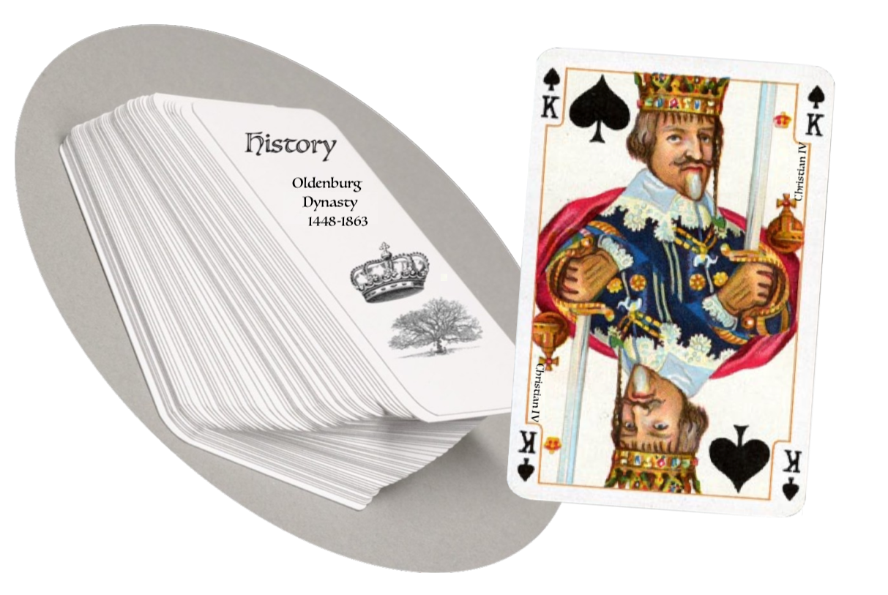
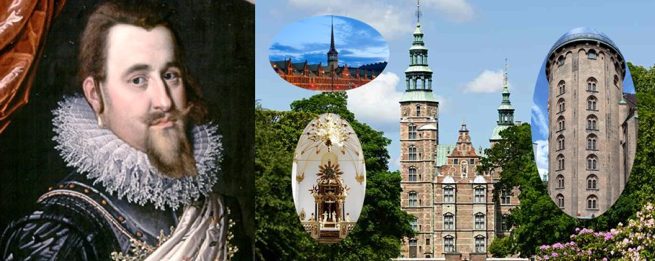
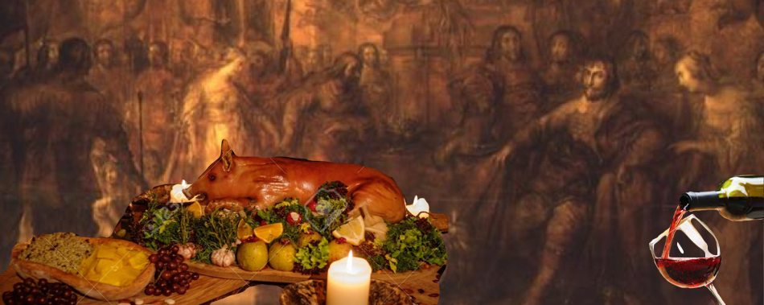

Oldenborg Dynasty
The Oldenburg dynasty is one of Europe's most influential royal houses, with branches that rule or have ruled in Denmark, Iceland, Greece, Norway, Russia, Sweden, Schleswig, Holstein, and Oldenburg.

Party bloodbath
In 1520 the danish king Christian II made the Swedes to surrender after a conflict. Swedes representatives sworn their allegiance to Christian II during a bunch of festivities held at the Stockholm Castle lasting several days. On the fourth day, the gates to the castle were closed and all the detractors of Christian II were bestially executed. This event is known as the "Stockholm bloodbath".Lutheranism is here!
Christian III was a pro-lutheran monarch that after "convincing" all the danish realms, he had three Catholic bishops arrested and set Lutheranism as the main religion of the kingdom. Martin Luther sent the king his congratulations.Building the realm
Christian IV was among the greatest builders in the Nordic countries, and despite military disasters (i.e fiasco in the Thirty Years war), economic recession, and marital horrors (i.e infidelities and affair intrigues), Christian stands as a leading, loved and admired king. He established towns that include Christianshavn, Kristiania (new Oslo) among many others. He also left his taste throughout Copenhagen, such as Rosenborg Castle, Borsen, the round tower, and Trinitatis Church etc.


Let's drink again!
The king Christian IV had a colorful personality, he was really keen on eating food and drinking wine. During one party the monarch called 34 toasts, after which everyone had to empty their glasses. As you can imaging, everyone ended completely drunk.The first absolute monarch
Christian V was the first to accede to the throne as absolute monarch. During his rule the absolutist social structure was completed, and the power of the royal household was not under any threat.Christian VII's "hobbie"
The king’s uncontrollable urge to masturbate was a popular subject within the royal court. The gossip was confirmed when during a royal feast in Christiansborg, the king entered into the room with his pants around his ankles.Christian was psychologically unstable, possibly due to schizophrenia.
Queen Caroline Matilda and Dr.Struensee
Queen Caroline Matilda of Great Britain was the wife of Christian VII. Johann Friedrich Struensee was the king’s personal physician. s. The Queen and Struensee started an intense love that resulted in the pregnancy of Caroline Matilda; the baby that was borned from this relationship was princess Louise (she was accepted by Christian VII). Surprisingly during this popular affair, the king and queen relationship improved. This curiosity is shown in the 2012 movie "A Royal Affair" directed by Nikolaj Arcel.
Constitution
The new Constitution for Denmark was signed by Frederik VII on 5 june 1849, bringing to an end 187 years of absolute monarchy with the following words: "The King will not attend the Sovereign in Council unless invited to do so".Simplified Oldenburg Dynasty family tree